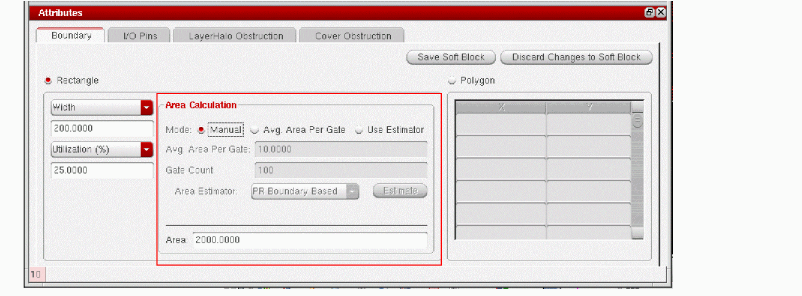

Creating a Non-Fixed Rectangular Boundary
Non-fixed refers to a boundary defined by estimating the area required by the block in question. The boundary is non-fixed because it is derived from only one fixed parameter (such as the height or width), an area utilization factor, and an area estimation function.
To create a non-fixed rectangular boundary,
- Select the Rectangle radio button in the Boundary tab.
-
Choose either Width or Aspect Ratio (W/H) from the first cyclic field and Utilization from the second cyclic field.
The Area Calculation group box is enabled, indicating that area estimation is required. -
Choose the area estimation method you prefer:
- Manual lets you directly type the value you want into the Core Area field.
- Avg. Area Per Gate lets you specify the gate count and the average area per gate. The system calculates the area by multiplying the two values.
-
Use Estimator lets you choose between PR Boundary Based and BBox Based area estimator. The PR Boundary Based estimation sums up the polygonal area of the individual instances to derive the overall area estimation. The BBox Based estimation, on the other hand, sums up the minimum bounding box area of the individual instances to derive the overall area estimation.
You can also register your own area estimation functions and use them, as appropriate. For more information, see Creating and Registering a User-Defined Area Estimation Function.
- (Optional) To modify any user-defined parameters for the selected area estimation function, click Estimate.
-
Click Save Soft Block.
The boundary parameters are set. The Attributes pane is disabled and the Instances table re-enabled.
Related Topics
Soft Block Mode in the CPH Window
Return to top